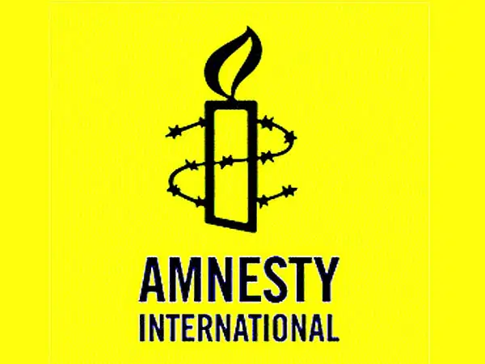

সাইবার নিরাপত্তা আইনে মানুষকে হয়রানির সুযোগ রয়েছে
সাইবার নিরাপত্তা আইনে মানুষকে হয়রানির সুযোগ থাকছে উল্লেখ করে অংশীজনদের মতামত নিয়ে প্রস্তাবিত এই আইনে সংশোধন আনার দাবি জানিয়েছেন একদল অধিকারকর্মী। তাঁরা বলেছেন, সাইবার নিরাপত্তা আইনের বেশ কিছু ধারা সংবিধানের সঙ্গে সাংঘর্ষিক। আন্তর্জাতিক মানদণ্ডের সঙ্গে আইনটি সামঞ্জস্যপূর্ণ নয়।
রাকি ইউসুফ বাঁধন
০১৭৩১৩১৭০৭১
নিজেদের মুক্ত গণমাধ্যম ও ডিজিটাল অধিকারকর্মী পরিচয় দিয়ে ১২ জন অধিকারকর্মী আজ রোববার এক বিবৃতিতে এসব কথা বলেছেন। বিবৃতিদাতারা হলেন বাংলাদেশ মানবাধিকার সাংবাদিক ফোরামের আহম্মদ উল্লাহ, ভয়েসের আহমেদ স্বপন মাহমুদ, সাউথ এশিয়ান মিডিয়া সলিডারিটি নেটওয়ার্কের খায়রুজ্জামান কামাল, গণমাধ্যম অধিকারকর্মী মাইনুল ইসলাম খান, মানবাধিকারকর্মী ও গবেষক রেজাউর রহমান লেনিন, গ্লোবাল ভয়েসেসের রেজওয়ান ইসলাম, আইনজীবী মো. সাইমুম রেজা তালুকদার, এফইএক্সবির সালিম সামাদ, মানবাধিকারকর্মী সাঈদ আহমেদ, মানবাধিকারকর্মী ও আইনজীবী শারমিন খান, উন্নয়নকর্মী শামীম আরা শিউলী এবং পেন ইন্টারন্যাশনাল বাংলাদেশের সৈয়দা আইরিন জামান।
৭ আগস্ট বিতর্কিত ডিজিটাল নিরাপত্তা আইন বদলে সাইবার নিরাপত্তা আইন ২০২৩–এর অনুমোদন দেয় মন্ত্রিসভা। ৯ আগস্ট আইনটির খসড়া প্রকাশ করে নাগরিকদের মতামত চাওয়া হয়েছে।
ডিজিটাল নিরাপত্তা আইন রহিত করার সিদ্ধান্ত এবং নাগরিকদের মতামত প্রদানের সুযোগকে সাধুবাদ জানানো হয়েছে বিবৃতিতে। তবে অধিকারকর্মীরা এও বলেছেন, অংশীজনদের সঙ্গে আলোচনা না করে, আন্তর্জাতিক আঞ্চলিক ও দেশীয় মানবাধিকারের ধারণার সঙ্গে পুরোপুরি সামঞ্জস্য না রেখে, সাইবার অপরাধ, নিরাপত্তা ও পরিসরের বিষয় পরিষ্কার না করে, প্রশাসনিক ক্ষমতা ও দায়িত্বে বিচারিক পর্যবেক্ষণের আওতায় না এনে তড়িঘড়ি করে মন্ত্রিসভার বৈঠকে প্রস্তাবিত আইনটি অনুমোদন করা দুঃখজনক। এ ছাড়া এটি নাগরিক বান্ধব আইন প্রণয়ন প্রক্রিয়াকে প্রশ্নবিদ্ধ করে।
বিবৃতিতে আরও বলা হয়েছে, প্রস্তাবিত সাইবার নিরাপত্তা আইনের ২৯ ধারায় অপরাধ নির্ণয় হবে দণ্ডবিধির ৪৯৯ ও ৫০০ ধারায় এবং শাস্তি হবে প্রস্তাবিত আইনে, যা প্রস্তাবিত আইনটির উদ্দেশ্য নিয়ে ধোঁয়াশা সৃষ্টি করে। শাস্তি প্রদানের এই তারতম্য সংবিধানের ২৭ অনুচ্ছেদর সঙ্গে সাংঘর্ষিক। এ ছাড়া আরও কিছু ধারা জামিনযোগ্য করার সুযোগ রয়েছে।
Read More...
ডিজিটাল নিরাপত্তা আইনের দমনমূলক বিধিগুলো সাইবার নিরাপত্তা আইনে রয়েছে: অ্যামনেস্টির পর্যালোচনা
ডিজিটাল নিরাপত্তা আইন রহিত করে সরকার সাইবার নিরাপত্তা নামে নতুন একটি আইনের খসড়া তৈরি করলেও এতে আগের আইনের দমনমূলক বিধিগুলো রয়ে গেছে। সাইবার নিরাপত্তা আইন পর্যালোচনা করে এমন মন্তব্য করেছে আন্তর্জাতিক মানবাধিকার সংস্থা অ্যামনেস্টি ইন্টারন্যাশনাল।
‘বাংলাদেশ: সরকারকে খোলা চিঠি, প্রস্তাবিত সাইবার নিরাপত্তা আইনের প্রতিক্রিয়া’ শীর্ষক ২৫ পৃষ্ঠার পর্যালোচনা মঙ্গলবার অ্যামনেস্টি ইন্টারন্যাশনালের ওয়েবসাইটে প্রকাশ করা হয়েছে।
রাকি ইউসুফ বাঁধন
০১৭৩১৩১৭০৭১

তে বলা হয়েছে, প্রাথমিকভাবে আইনটির খসড়া পর্যালোচনা করে সংস্থাটির মনে হয়েছে, এতে ডিজিটাল নিরাপত্তা আইনের দমনমূলক বিধিগুলো রয়ে গেছে। এই ডিজিটাল নিরাপত্তা আইন বাংলাদেশে মতপ্রকাশের স্বাধীনতার অধিকারকে বিপন্ন ও সীমিত করার জন্য ব্যবহার করা হতো।
সাইবার নিরাপত্তা আইনের ৬ নম্বর অনুচ্ছেদের উল্লেখ করে সংস্থাটি বলছে, ডিজিটাল নিরাপত্তা আইনের সঙ্গে তুলনায় দেখা যাচ্ছে, এই অনুচ্ছেদে একটি ছাড়া সব অপরাধের বিষয় একই আছে। এ ক্ষেত্রে শুধু একটি পরিবর্তন আনা হয়েছে। এই পরিবর্তনও অপরাধের ধরনে নয়, শাস্তির ক্ষেত্রে। সংস্থাটি বলেছে, আটটি অপরাধের সর্বোচ্চ শাস্তি কমানো হয়েছে, দুটি অপরাধের ক্ষেত্রে কারাদণ্ডের শাস্তি বাদ দেওয়া হয়েছে, তিনটি অপরাধের সর্বোচ্চ অর্থদণ্ড বাড়ানো হয়েছে এবং একই অপরাধ পরেও করলে বাড়তি সাজা বাতিল করা হয়েছে।
অ্যামনেস্টি ইন্টারন্যাশনাল তাদের পর্যালোচনায় বলেছে, ডিজিটাল নিরাপত্তা আইনের ধারা ২৫ (মিথ্যা বা আপত্তিকর তথ্য প্রকাশ), ধারা ২৯ (মানহানিকর তথ্য প্রকাশ) এবং ধারা ৩১ (আইনশৃঙ্খলা পরিস্থিতির অবনতি ঘটানোর শাস্তি) সাইবার নিরাপত্তা আইনের খসড়ায় অবিকৃত রয়েছে।
খসড়া সাইবার নিরাপত্তা আইনের ২৫ ধারায় ‘রাষ্ট্রের ভাবমূর্তি ও সুনাম ক্ষুণ্ন’ করার মতো বিষয়ের কোনো ব্যাখ্যা না থাকার বিষয়টিও উল্লেখ করেছে সংস্থাটি। এ ছাড়া ২৯ ধারা ডিজিটাল নিরাপত্তা আইনের মতো রয়েছে। শুধু এ ক্ষেত্রে কারাদণ্ডের বদলে জরিমানার বিধান রাখা হয়েছে।
Read More...
রেকর্ড দাম না পেলে এমবাপ্পেকে ছাড়বে না পিএসজি
সাইবার নিরাপত্তা আইনে মানুষকে হয়রানির সুযোগ থাকছে উল্লেখ করে অংশীজনদের মতামত নিয়ে প্রস্তাবিত এই আইনে সংশোধন আনার দাবি জানিয়েছেন একদল অধিকারকর্মী। তাঁরা বলেছেন, সাইবার নিরাপত্তা আইনের বেশ কিছু ধারা সংবিধানের সঙ্গে সাংঘর্ষিক। আন্তর্জাতিক মানদণ্ডের সঙ্গে আইনটি সামঞ্জস্যপূর্ণ নয়।
রাকি ইউসুফ বাঁধন
০১৭৩১৩১৭০৭১
এ যেন রবীন্দ্রনাথ ঠাকুরের দেওয়া ছোট গল্পের সংজ্ঞার মতো, ‘শেষ হইয়াও হইল না শেষ’। বলা হচ্ছে কিলিয়ান এমবাপ্পের দলবদলের কথা। দলবদলের শুরু থেকেই এমবাপ্পের ভবিষ্যৎ নিয়ে চলছে নানা নাটকীয়তা। পিএসজিকে চুক্তি নবায়ন না করার চিঠি দিয়েই জুনের মাঝামাঝি সময়ে এই নাটকের শুরুটা করেন এমবাপ্পে।
এরপর অবশ্য পানি গড়িয়েছে অনেক দূর। তবে এমবাপ্পে দলে ফিরে মাঠে নামার পর এ নাটকের অবসান হয়েছে বলে মনে হচ্ছিল, কিন্তু স্প্যানিশ সংবাদমাধ্যম এএস নতুন এক খবর দিয়েছে। সংবাদমাধ্যমটি বলছে, পিএসজি এমবাপ্পেকে রেকর্ড দাম পেলেই শুধু ছাড়বে।
Read More...